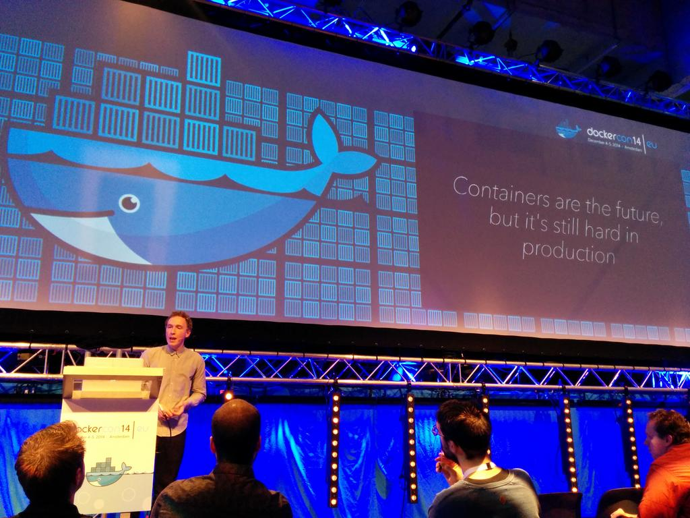

I was in the dockercon Europe only for one reason: I think that docker and the VoIP world will be good friends. However, some problems will need to be sorted before that can happen. At the moment the state of the VoIP Docker support is far better than optimal, but I am pretty sure that it will be there in just few months, or even weeks because Docker is growing so fast.
I need to admit that my expectations before the conference were big, but the result was even better than what I was expected. It was awesome! The organization was perfect, venue, sound, displays, lights, WiFi, food, everything.
About the conference, it lasts for 2 days, split in 2 different kind of talks:
- Keynotes from amazing people as the Docker CTO, CEO, ING IT manager, Netflix architect... focussed in use cases and solutions.
- And some deeper talks about solutions, how to's, and a lot of tips.
Docker Community
One of the best things that Docker is doing is take care of their community. It's growing a lot, loads of pull request & lots of new ideas. Manage this is not easy and keeping track of all of those while you continue maintaining a happy community is a hard work.
The solution for them is to split the project in small projects, and keep a different set of maintainers for each plugin of the real engine. This idea is amazing, and makes it easier for new parties doing integrations-solutions. I love it <3
Docker Machine
Docker Machine was the first new announcement. The tool is quite powerful for admins or devs. Sadly, after deep a little bit in the code is not as powerful as I thought when they announced it in the conference. It's definitely a tool to keep watching, but, at the moment I'll keep my host machines with docker and shared volumes with my host.
Docker Swarm
This announcement made me happy. Orchestration is difficult, very difficult, Swarm is the first step of something that I hope will be great. Use docker as normal with Swarm is quite useful, and easy to make it grow. Things like volumes or networking linking will continue to be difficult, but I'm sure that will be fixed in less than 4 months ;-).
On the other hand: Mesos looks like that will integrate with Docker Swarm, this relation makes Swam even more powerful.
Docker Compose
When docker announced the acquisition of fig, I was thinking that the service would be merged into docker, but it looks that I was wrong. Docker Compose use the same fig structure and I love it. Compose will help a lot to devs, and I'm sure that in relation with Swarm they will do a very good mix.
Another talks
About the other talks: some of them were amazing: Mitchell Hashimoto presented terrafon.io and consul.io. Both projects are awesome. Consul.io will help to move from vertical scaling to horizontal scaling in a lot of VoIP projects. Hopefully in few weeks I will write about kamailio and consul ;-)
Another talks were about tips, tips to build more faster, tips about how to migrate old platforms, about how to move Docker to production, how to use it in CI environments, those talks wer kinda useful.
In the other hand, there were some other talks that I didn't like: BBC CI, Rafe Colton talk... but it's quite difficult to keep the high level during all the talks of the conference.
Another think that it has impacted me is that the USA devs are far better storytellers than Europe devs (We need to learn :-))
Sponsors
Usually I don't like the sponsors trying to sell me something, but thanks to the sponsorships at Dockerconf I got to met Tutum (Amazing project to deploy multiple containers), a bit about ClusterHQ and I also saw that some vendors (as IBM, HP, Vmware, Azure) getting involved in this technology which makes me happy. Thanks to them for support the conference.
On Thursday night I had a chat with Solomon Hykes about networking. He shared with me this open issues, I realised that openvswitch is really powerful, and some other small tips about networking. I'll test them and I'll tell you the results of my tests. It's amazing how this disruptive web technology can be part of the VoIP Solutions, I'm also sure that 2015 will be, for me, the year that I'll build a lot of VoIP servers into containers ;-)
Conclusion
Finally my conclusion about docker after the conference is:
- All the people use docker in testing environments.
- Docker is the future, but it's still hard in production.
- Docker is not just the technology, the good thing is the community.
- Split the project in small pieces, will keep the pieces small, and will be easy to maintain, grown and focus. Congrats to all, I love this idea <3
Nothing more to add to the Dockercon summary. Thanks to all the Docker community for this amazing conference, all the people made it amazing. Thanks to the organizers. All conference was incredible, the venue, the party, ALL. I know that organize events like this it's a lot of effort. Big thanks.
Hopefully see you in the next Dockercon Europe!